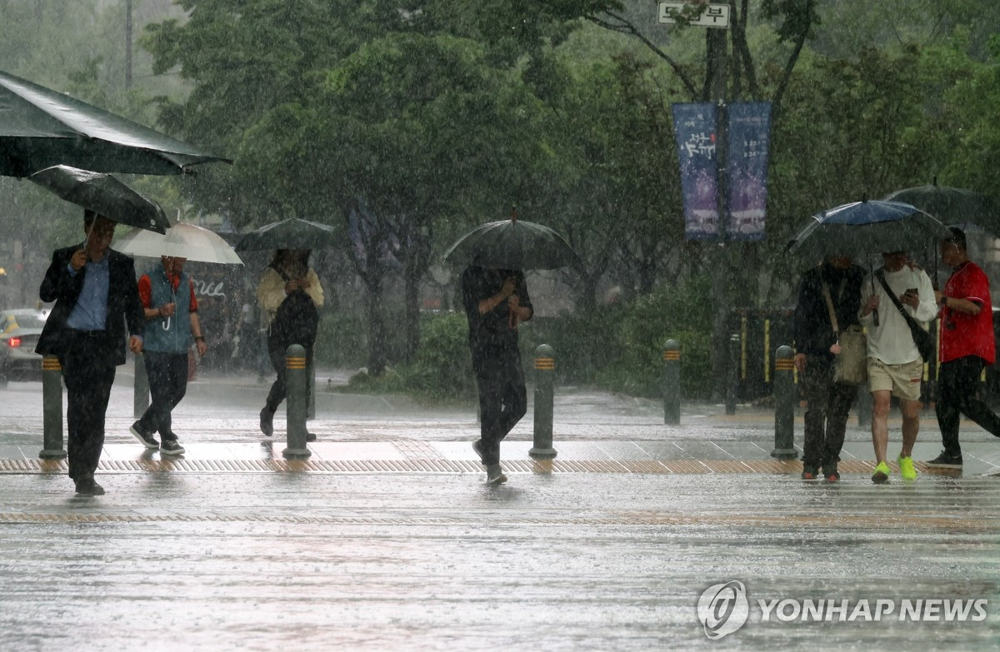

서울 기습폭우에 청계천 등 하천 25곳 통제···범람 우려(종합2보)
배수지원 22건·시설물 안전조치 28건…호우주의보 해제로 보강근무체제
'쏟아지는 비'
(서울=연합뉴스) 이진욱 기자 = 비가 내린 16일 서울 광화문광장 인근에서 시민들이 우산을 쓴 채 이동하고 있다. 2025.5.16 cityboy@yna.co.kr
(서울=연합뉴스) 윤보람 정윤주 기자 = 16일 오후 서울에 내린 기습 폭우로 범람에 대비해 청계천과 안양천을 포함한 시내 하천 25곳의 통행이 통제됐다.
오후 8시 기준으로 통제 하천은 중랑천, 안양천, 목감천, 우이천, 묵동천, 방학천, 도봉천, 구파발천, 당현천, 성북천, 정릉천, 홍제천, 향동천, 불광천, 양재천, 탄천, 세곡천, 반포천, 성내천, 감이천, 고덕천, 도림천, 청계천, 역곡천, 장지천이다.
서울시에 따르면 이날 집중호우로 22건의 배수 지원과 28건의 시설물 안전조치가 이뤄졌다.
시는 오후 4∼5시께 호우주의보 발효와 동시에 동북권, 서북권, 서남권에 '상황근무 1단계(주의)'를 발령했다가 오후 8시를 기해 주의보가 해제되자 보강근무 체제로 전환했다.
서울시에 따르면 이날 집중호우로 22건의 배수 지원과 28건의 시설물 안전조치가 이뤄졌다.
시는 오후 4∼5시께 호우주의보 발효와 동시에 동북권, 서북권, 서남권에 '상황근무 1단계(주의)'를 발령했다가 오후 8시를 기해 주의보가 해제되자 보강근무 체제로 전환했다.
빗물펌프장은 한때 25곳이 가동됐다가 오후 8시 현재 9곳만 가동 중이다.
시는 기상 상황과 하천 수위를 지속해서 모니터링해 대응할 계획이다.
출입 통제된 청계천
(서울=연합뉴스) 김도훈 기자 = 서울 대부분 지역에 호우주의보가 내려진 16일 서울 청계광장 인근 청계천 산책로 입구 출입이 통제되고 있다. 2025.5.16 superdoo82@yna.co.kr
용산구와 영등포구 등은 재난문자를 통해 '저지대 및 하천 출입을 자제하고, 침수 우려가 있는 지하차도 출입을 하지 말라'고 공지했다.
집중 호우로 퇴근길도 정체를 빚었다.
서울교통정보센터 토피스(TOPIS)에 따르면 오후 6시 기준으로 서울 도심 전체 속도는 시속 8.2㎞, 서울시 전체 속도는 시속 13.9㎞였다.
jungle@yna.co.kr